40 سؤال
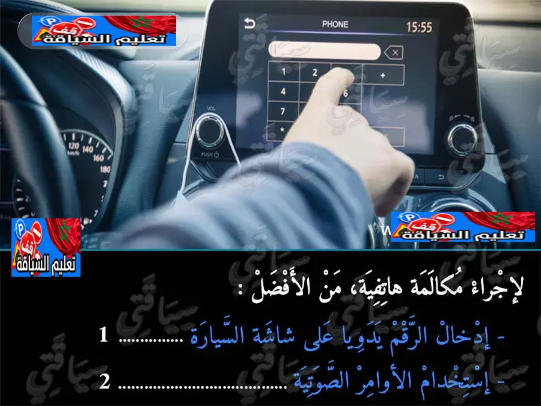
الجواب الصحيح: 2
كيبقى التركيز التام على الطريق هو الأولوية القصوى عند سياقة السيارة لضمان سلامة الجميع. فاش كتكون هناك ضرورة ملحة لإجراء مكالمة هاتفية، كيتعتبر استخدام الأوامر الصوتية هو الخيار الأمثل والآمن، حيت هاد التقنية كتمكن السائق باش يتصل بالرقم اللي بغا غير بالصوت ديالو بلا ما يحتاج يحيد يديه من المقود (الفولان) ولا يخرج عينيه من الطريق باش يكتب النمرة بيده في شاشة السيارة. هاد التصرف كيحمي السائق من خطر التشتت الذهني والبصري اللي كيقدر يتسبب في حوادث سير خطيرة، وكيخلي التحكم في العربة كلي ومستمر طيلة وقت المكالمة. الجواب الصحيح هو رقم 2,
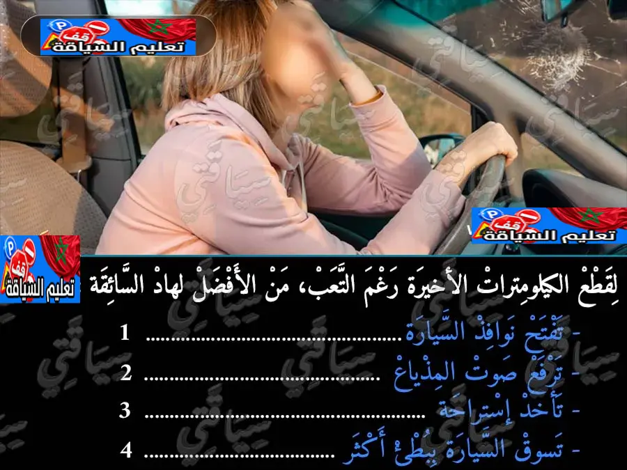
الجواب الصحيح: 3
السائقة يجب عليها، في حالة رغبتها في قطع الكيلومترات الأخيرة رغم التعب، أن تأخذ استراحة، لأن التعب أو النعاس أثناء القيادة يقلّل بشكل كبير من تركيز السائق ويزيد من خطر الحوادث. فتح النوافذ أو رفع صوت المذياع أو تخفيف السرعة قد يعطي إحساسًا مؤقتًا باليقظة، لكنه لا يزيل السبب الحقيقي للتعب. الحل الفعّال والآمن هو التوقف وأخذ قسط من الراحة أو النوم القصير قبل مواصلة الطريق، مما يعيد للسائق يقظته وقدرته على القيادة بأمان. كما يُوصى أيضًا بأخذ فترة استراحة بعد كل ساعتين من السياقة لتجنّب الإرهاق والحفاظ على الانتباه أثناء القيادة. الجواب الصحيح هو رقم 3.
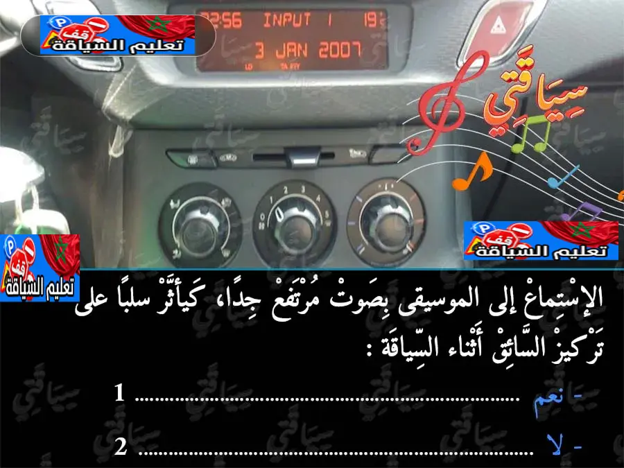
الجواب الصحيح: 1
كيتعتبر التركيز الذهني والسمعي للسائق هو الركيزة الأساسية لضمان السلامة على الطريق. الاستماع للموسيقى بصوت مرتفع جداً كيشكل عامل تشتيت قوي، حيت كيعزل السائق على المحيط ديالو وكيمنعو من سماع الأصوات الخارجية الضرورية، بحال المنبهات الصوتية (الكلاكسون) ديال العربات الأخرى ولا صفارات الإنذار ديال الإسعاف والشرطة. هاد الضجيج المفرط كيجهد الدماغ وكينقص من سرعة رد الفعل عند وقوع أي خطر مفاجئ، وهادشي كيبين باللي المبالغة في مستوى الصوت داخل العربة كتأثر فعلياً وبشكل سلبي على درجة الانتباه والتركيز المطلوبين للسياقة الآمنة. الجواب الصحيح هو رقم 1.
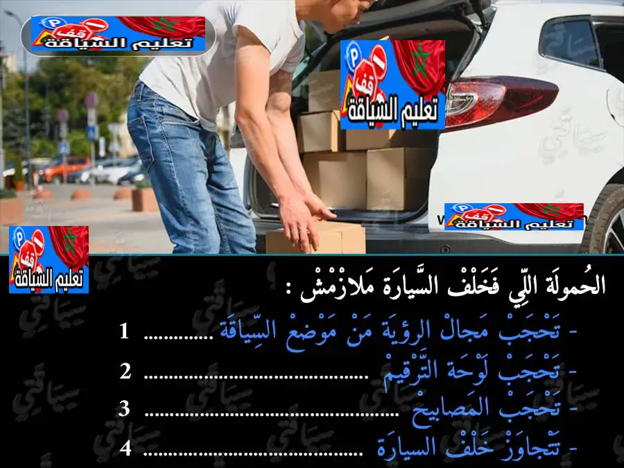
الجواب الصحيح: 1 و 2 و 3
بناءً على مقتضيات مدونة السير المغربية، كيتوجب على السائق عند وضع أي حمولة في الخلف ديال السيارة يحرص على أنها متعرقلش شروط السلامة الأساسية. هاد الحمولة ملازمش نهائيا تحجب مجال الرؤية من موضع السياقة حيت السائق خاصو يبقى مراقب الطريق من المرايات بوضوح، كما أنها ممنوع تغطي لوحة الترقيم اللي كتعرف بالهوية ديال العربة، ولا تحجب الأضواء الخلفية اللي هي وسيلة التواصل الأساسية مع باقي مستعملي الطريق. القانون كيسمح للحمولة باش تتجاوز مؤخرة العربة في حدود 3 أمتار كحد أقصى (مع ضرورة الإشارة ليها بالنهار وبالليل)، إلا أن الحفاظ على وضوح الرؤية والإنارة والترقيم كيبقى شرط إلزامي ومفروض لضمان سياقة آمنة وقانونية. الجواب الصحيح هو رقم 1 و 2 و 3 .
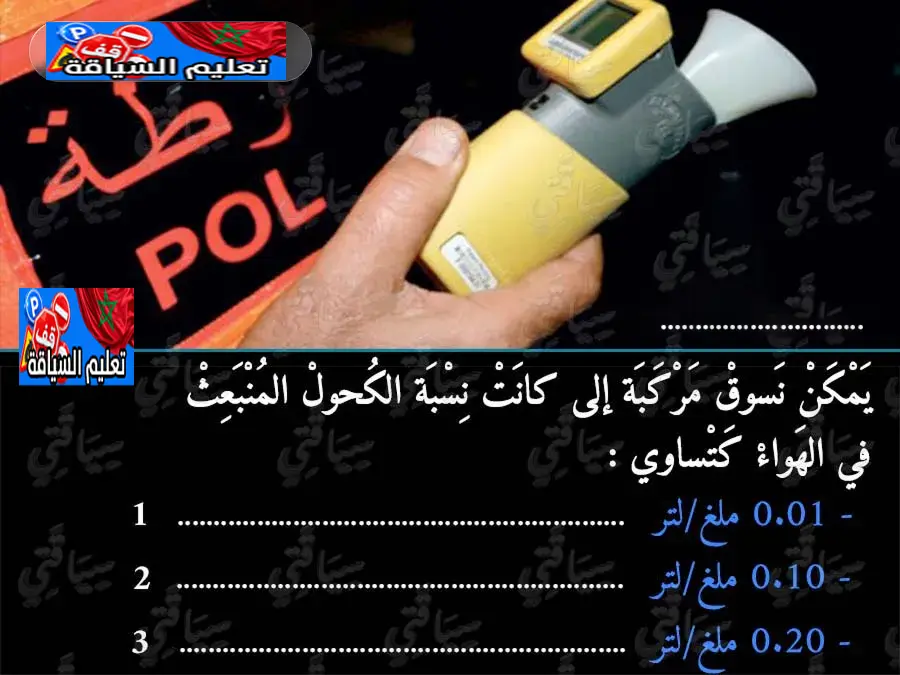
الجواب الصحيح: 1
بناءً على مقتضيات مدونة السير المغربية، السائق كيتعتبر فحالة مخالفة إلا كانت نسبة الكحول فالهوا اللي كيتنفسو من الفم كتساوي أو كتفوت 0.10 ملغ/لتر، أو كانت النسبة فالدم كتساوي أو كتفوت 0,20 غ/لتر. واللي كاتسبب أيضا فسحب 6 نقاط للسائق المخالف، هاد الحدود القانونية كتبيّن أن السياقة كتولي ممنوعة ملي الكحول كيوصل لهاد المستوى، حيت كيقدر ينقص التركيز، يبطّأ ردّة الفعل، ويأثر على التحكم فالعربة. بما أن السؤال كيهضر على نسبة الكحول المنبعث في الهواء، فالاختيار اللي باقي مسموح به هو 0.01 ملغ/لتر حيث أقل من الحد الممنوع 0.10 ملغ/لتر. أما 0.10 ملغ/لتر فهي الحد اللي كتبدأ منو الجنحة و0.20 ملغ/لتر كتفوتو بزاف. الجواب الصحيح هو رقم 1: 0.01 ملغ/لتر..
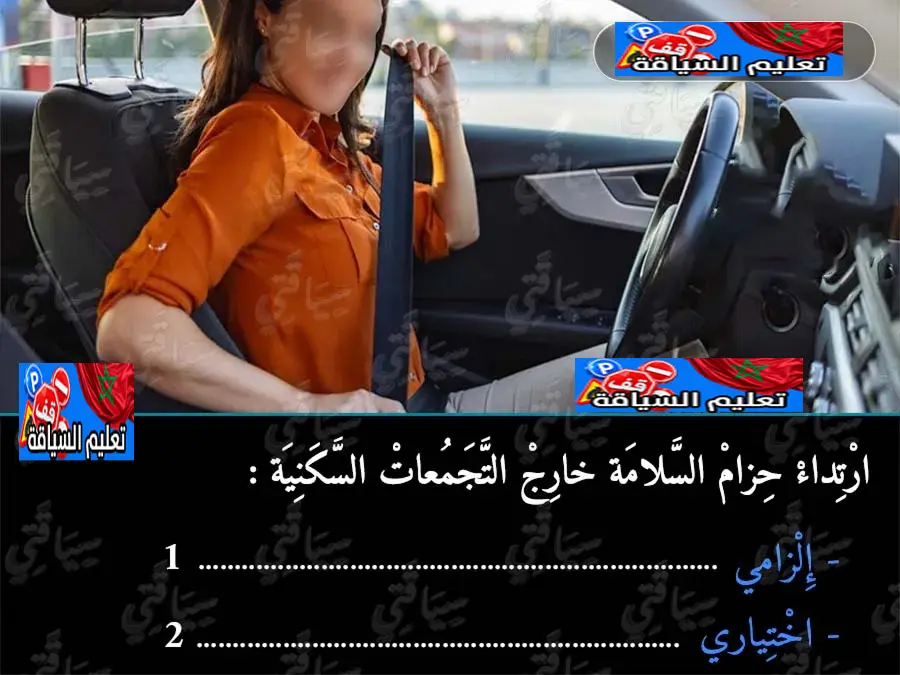
الجواب الصحيح: 1
بناءً على مقتضيات مدونة السير المغربية، ارتداء حزام السلامة هو إلزامي داخل وخارج التجمعات السكنية، يعني ماشي غير خارج التجمعات السكنية، لأن القانون كيهدف يحمي السائق والركاب من الإصابات الخطيرة فحالة الفرملة المفاجئة أو وقوع حادثة. سواء كانت السرعة قليلة داخل المدينة أو كبيرة خارجها، الحزام كيبقى وسيلة أساسية للسلامة. وعدم احترام إجبارية حزام السلامة كيتعتبر مخالفة من الدرجة الثانية، وكيترتب عليها سحب نقطة واحدة من رصيد رخصة السياقة. الجواب الصحيح هو رقم 1.
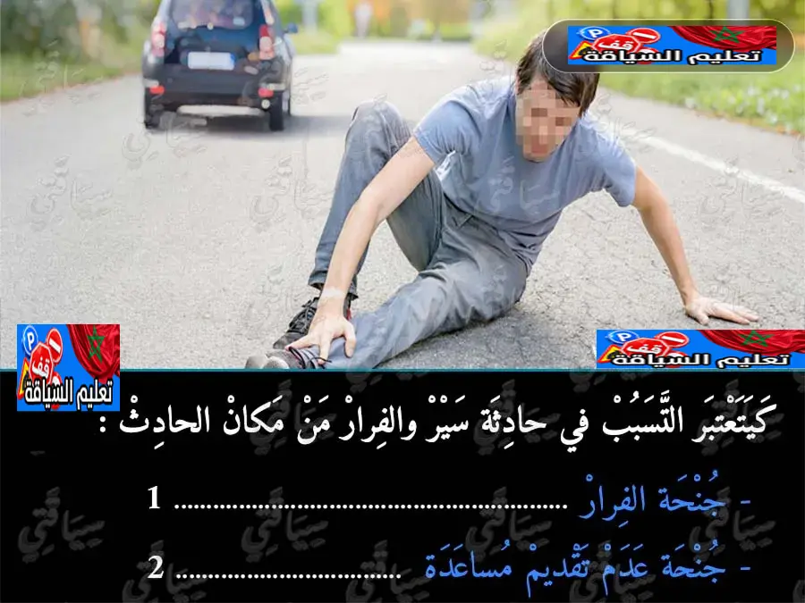
الجواب الصحيح: 1
تنص المادة 182 من مدونة السير المغربية على أن الهروب بعد التسبُّب في حادثة سير يُعدُّ جنحة فرار. يعاقب مرتكبها بـالحبس من شهر إلى 6 أشهر، وبـغرامة مالية من 2.000 إلى 10.000 درهم، كما تُوقَف رخصة السياقة لمدة من سنة إلى سنتين، ويُسحب 6 نقاط من رصيد الرخصة. إذا عاد الفاعل لارتكاب نفس الجنحة خلال خمس سنوات فتُضاعف العقوبات. لذا يجب الوقوف فورًا بعد الحادث، تقديم المساعدة أو إبلاغ المصالح المختصة، وإبداء المعطيات الشخصية لتفادي المتابعة الجنائية والعقوبات الشديدة. الجواب الصحيح هو رقم 1
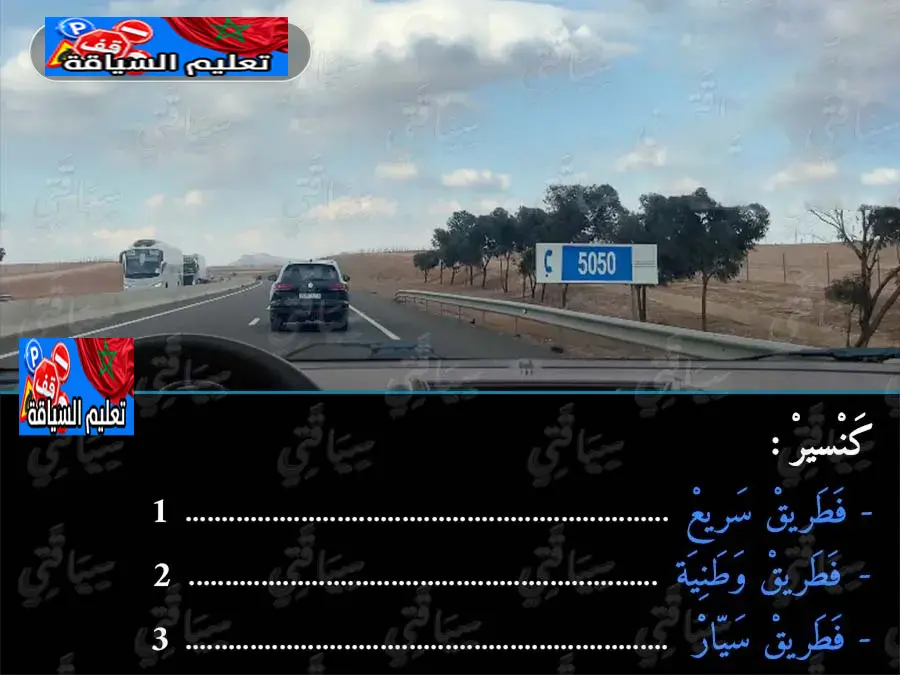
الجواب الصحيح: 3
مركز الاتصال 5050 هو رقم موحد خاص بمستعملي الطريق السيار بالمغرب، وكيستعملوه السائقين ملي كيحتاجو معلومات، مساعدة أو إغاثة. هاد الرقم كيبان فاللافتات الزرقاء على طول الطريق السيار، وغالبا كيتنشر كل 10 حتى 12 كيلومتر باش يبقى واضح وساهل على السائقين. هاد العلامة ماكاتدلش على أننا فطريق سريع أو طريق وطنية، حيث هاد اللافتة الزرقاء ديال 5050 ماكاتكونش فالطريق السريع ولا فالطريق الوطنية، وإنما كتكون فقط فالطريق السيارة. إذن ملي كنشوفو هاد العلامة، كنستنتجو أننا كنتواجدو فطريق سيار، والرقم 5050 هو رقم مركز الاتصال ديال الطرق السيارة بالمغرب، اللي كيتكلف بتسجيل الطلب وتتبعو حتى تتم معالجتو أو توصل الإغاثة عند الحاجة. الجواب الصحيح هو رقم 3: طريق سيار.
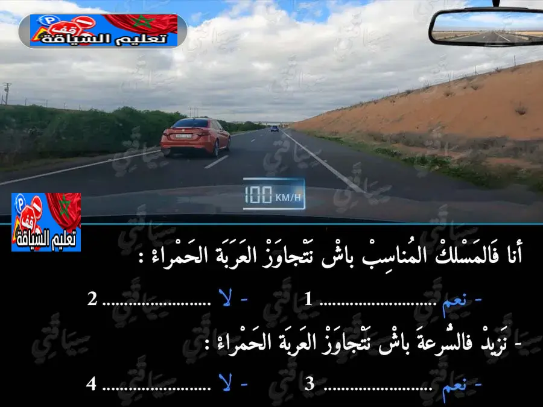
الجواب الصحيح: 2 و 4
بناءً على قواعد التجاوز فمدونة السير المغربية، أنا فهاد الوضعية ماشي فالمسلك المناسب باش نتجاوز العربة الحمراء، حيث التجاوز خاصو يكون من الجهة اليسرى وباستعمال المسلك اللي على اليسار، ولكن فالصورة العربة الحمراء هي اللي دايرة التجاوز وكتستعمل داك المسلك، وبالتالي ماخاصنيش نغامر ولا ندخل معها فالتجاوز. كذلك فاش شي عربة كتكون كتجاوزني، السائق خاصو يحافظ على نفس السرعة ديالو ماينقصش ومايزيدش فيها باش مايصعبش عليها عملية التجاوز. القاعدة العامة كتقول أن التجاوز كيكون من اليسار إلا فحالات خاصة. إذن فهاد الحالة ماكانزيدش فالسرعة باش نتجاوز العربة الحمراء، وماكنحاولش نتجاوزها محيت انا فالمسلك ديال السير العادي وماشي ديال التجاوز حيث المسلك ديال التجاوز مشغول. الجواب الصحيح هو 2 و 4.
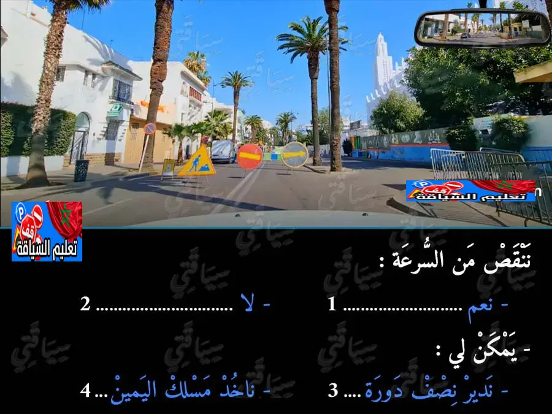
الجواب الصحيح: 1 و 4
فالصورة كيبان لينا أن الطريق فيها أشغال فالقدام، وكاين حتى تشوير كيأكد أن السير للأمام ممنوع بسبب قطع الطريق مؤقتا. فهاد الحالة خاصني نقص من السرعة لأن منطقة الأشغال كتقدر يكون فيها عمال، حواجز أو تغيير مفاجئ فالمسار، وخصني نكون مستعد نتبع التعليمات ديال التشوير المؤقت. مايمكنش ليا ندير نصف دورة باش نرجع منين جيت حيث كاين خط متصل، وهاد الخط كيمنعني نقطعو أو ندير مناورة خطيرة. بما أن كاينة علامة إجبار مؤقتة بالسهم، خاصني نتبع الاتجاه المفروض وناخذ مسلك اليمين باش نتجاوز منطقة الأشغال بطريقة آمنة وقانونية. الجواب الصحيح هو رقم 1 و 4.
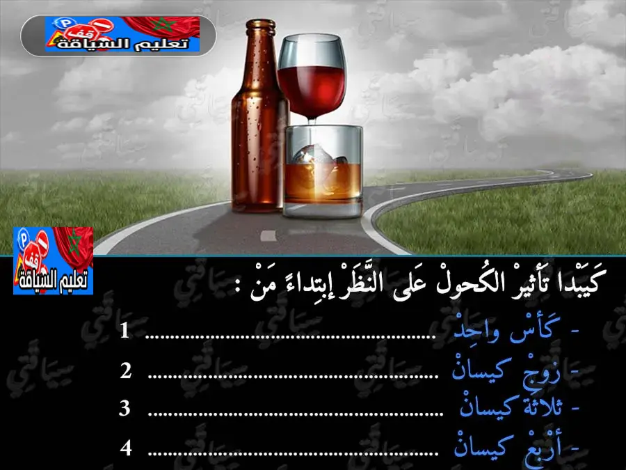
الجواب الصحيح: 1
تأثير الكحول على النظر والتركيز كيبدا من الكأس الأول، وماشي حتى يوصل السائق لزوج كيسان أو أكثر. من أول كمية ديال الكحول كتدخل للجسم، كتقدر تبدا تأثر على الانتباه، تقدير المسافات، سرعة رد الفعل، وضوح الرؤية، والقدرة على مراقبة الطريق مزيان. هاد الشي خطير فالسياقة، حيث السائق خاصو يكون مركز وعندو رؤية واضحة باش يتفادى الأخطار ويتعامل مع المفاجآت فالطريق. لذلك ماخاصش السائق يستهين بالكأس الأول، حيث حتى كمية قليلة من الكحول كتقدر تنقص من السلامة ديالو وسلامة باقي مستعملي الطريق. الجواب الصحيح هو رقم 1.
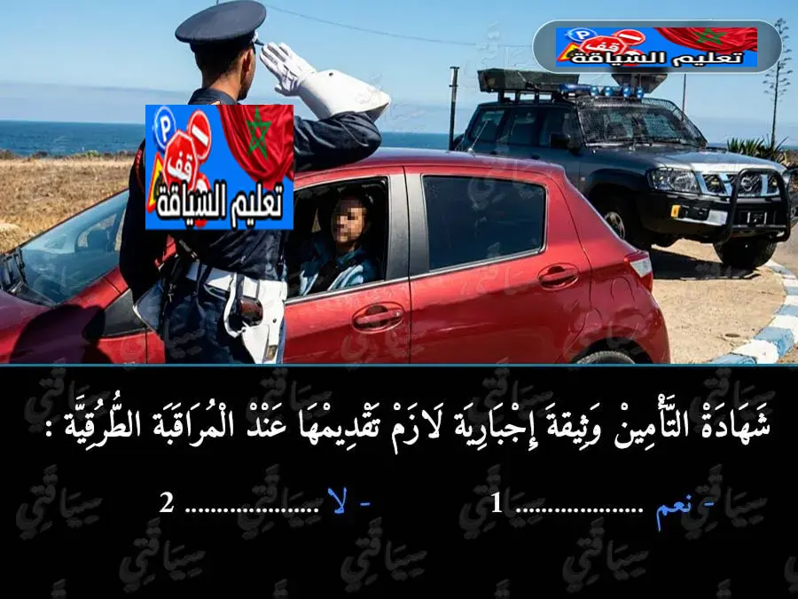
الجواب الصحيح: 1
شهادة التأمين وثيقة إجبارية خاص تكون مع السائق داخل المركبة، وخاص يقدمها عند المراقبة الطرقية إلا طلبها منو العون المكلف بالمراقبة. هاد الوثيقة كتثبت أن العربة مؤمنة قانونيا، وكتضمن التغطية فحالة وقوع حادثة لا قدر الله، لذلك ماشي وثيقة اختيارية ولا يمكن الاستغناء عليها أثناء السير فالطريق العمومية. وبما أن القانون كيلزم السائق يكون متوفر على الوثائق الضرورية ديال العربة ويقدمها عند المراقبة، الجواب الصحيح هو رقم 1.
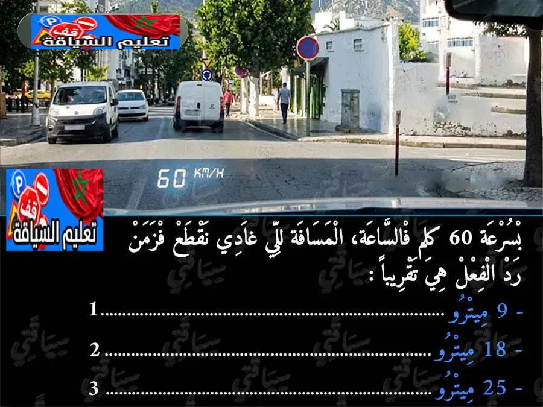
الجواب الصحيح: 2
مسافة رد الفعل هي المسافة اللي كتقطعها العربة من اللحظة اللي كيشوف فيها السائق الخطر حتى اللحظة اللي كيبدا يفريني فيها. باش نحسبوها بطريقة تقريبية كنستعملو قاعدة سهلة: كنشدو العدد العشري ديال السرعة وكنضربوه ف 3. فهاد الحالة السائق غادي بسرعة 60 كلم فالساعة، العدد العشري ديالها هو 6، يعني 6 × 3 = 18 متر. هاد المسافة كتبيّن أن السائق قبل ما يضغط على الفرانات غادي يكون قطع تقريبا 18 متر غير فزمن رد الفعل، وهاد الشي علاش خاص ديما نخليو مسافة الأمان ونبقاو مركزين فالطريق. الجواب الصحيح هو رقم 2: 18 متر.
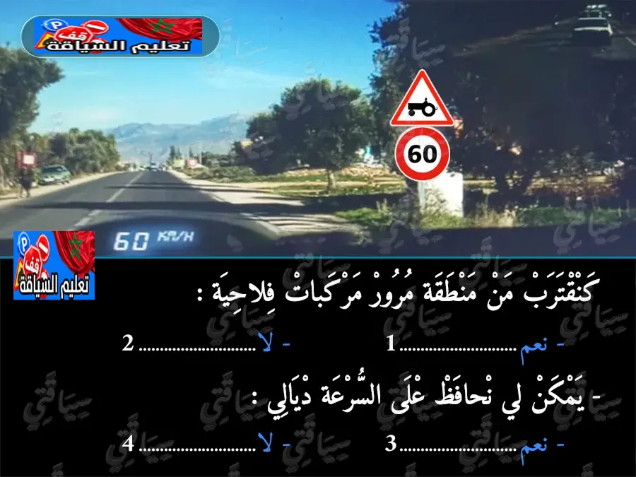
الجواب الصحيح: 1 و 3
أنا فعلا كنقترب من منطقة يمكن يكون فيها مرور ديال مركبات فلاحية ذات محرك، وهاد الشي كاتبيّنو علامة الخطر المثلثة اللي فيها رمز التراكتور. هاد العلامة كتنبّه السائق باش يزيد الحذر، حيث ممكن يلقا مركبة فلاحية خارجة من طريق جانبية أو كتسير بسرعة بطيئة. كذلك كاينة علامة تحديد السرعة ف 60 كلم فالساعة، وهاد الشي كيعني أن السرعة القصوى المسموح بها هي 60 كلم فالساعة. بما أنني كنمشي دابا بسرعة 60 كلم فالساعة، يمكن ليا نحافظ على السرعة ديالي، بشرط نبقى مركز ومستعد نبطّئ إلا بان شي خطر أو شي مركبة فلاحية فالطريق. الجواب الصحيح هو رقم 1 و 3.
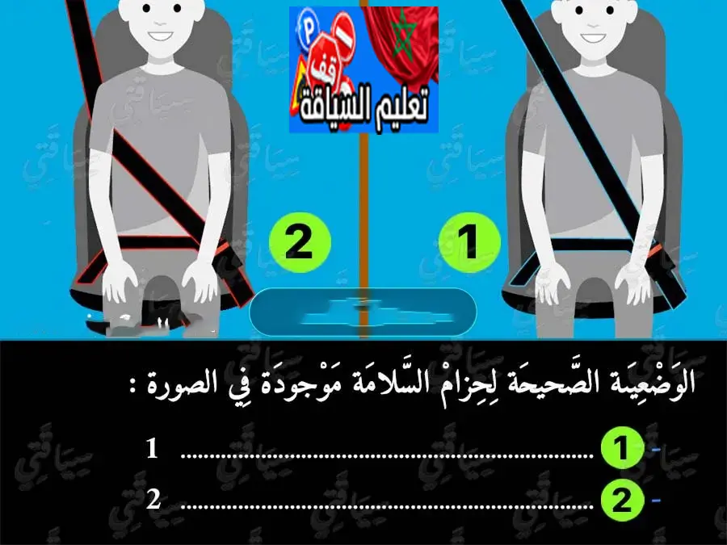
الجواب الصحيح: 1
الوضعية الصحيحة لحزام السلامة هي اللي باينة فالصورة رقم 1، حيث الحزام دوز من فوق الكتف ومن وسط الصدر، والحزام السفلي جاي فوق الحوض. هاد الوضعية كتخلي الحزام يشد الجسم من الأماكن القوية فحالة الفرملة المفاجئة أو وقوع حادثة، وكتنقص من خطر الإصابة. أما الصورة رقم 2 فهي غير صحيحة، لأن الحزام ما دازش بطريقة سليمة على الصدر وتحت الإبط، وهاد الشي كيقدر يخلي الحزام مايحميش الراكب مزيان أو يسبب ليه إصابات. الجواب الصحيح هو رقم 1.
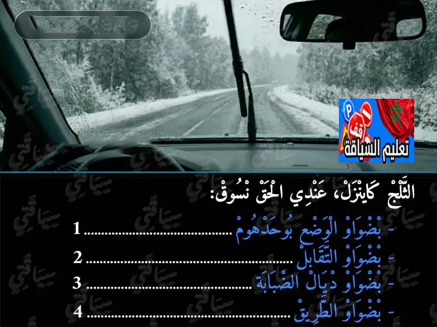
الجواب الصحيح: 2 و 3
فاش كيكون الثلج كاينزل كتولي الرؤية ناقصة، وبالتالي السائق خاصو يستعمل أضواء التقابل، ويمكن يستعمل كذلك أضواء الضباب إلا كانت الرؤية ضعيفة بزاف بسبب الثلج. أضواء الوضع بوحدهم ماكافيينش حيث غير كيبينو وجود السيارة وماكيعاونوش السائق يشوف الطريق، وأضواء الطريق ماشي مناسبة مع الثلج حيث ضوها قوي وكيقدر ينعكس على الثلج ويرجع الرؤية أصعب. إذن الجواب الصحيح هو رقم 2 و 3: أضواء التقابل وأضواء الضباب.
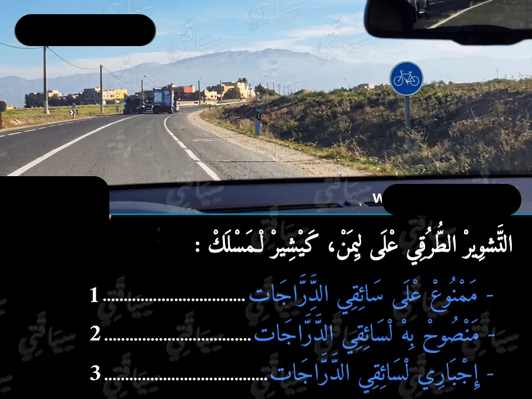
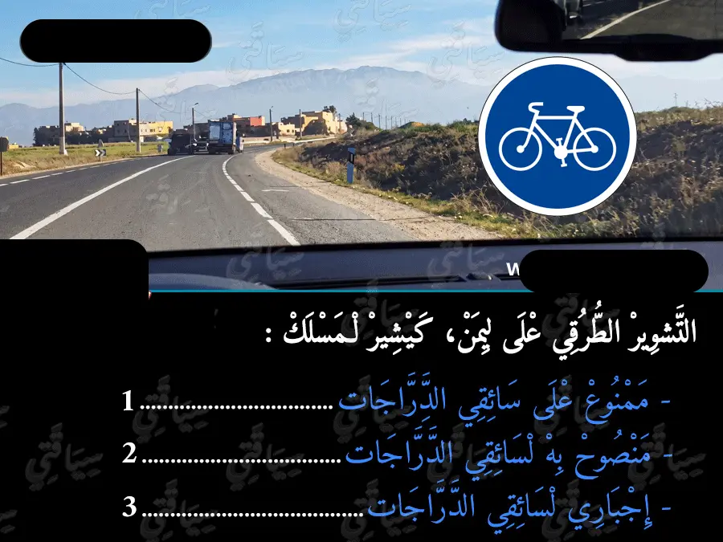
الجواب الصحيح: 3
العلامة الزرقاء الدائرية اللي فيها رمز الدراجة كتعني أن هاد المسلك إجباري لسائقي الدراجات، يعني سائق الدراجة خاصو يستعمل هاد المسلك المخصص ليه. هاد العلامة ماكاتعنيش أن المسلك ممنوع على الدراجات، لأن علامات المنع كتكون باللون الأحمر وماشي بالأزرق. وماكاتعنيش حتى أنه غير منصوح به فقط، لأن العلامات الزرقاء الدائرية كتدل على الإجبار. إذن هاد التشوير كينظم السير وكيحمي سائقي الدراجات بتخصيص مسلك خاص بهم. الجواب الصحيح هو رقم 3 إجباري لسائقي الدراجات.
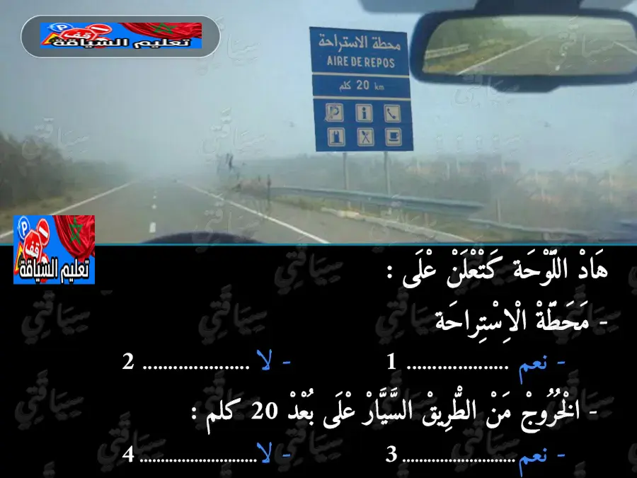
الجواب الصحيح: 1 و 4
حنا كانتواجدو ف طريق سيار، حيث هاد النوع ديال اللوحات الزرقاء كيتستعمل بزاف فالطريق السيار باش يعطي للسائق معلومات على الخدمات الموجودة فالمسار. اللوحة مكتوب فيها محطة الاستراحة، وهاد الشي كيعني أن كاينة محطة استراحة جاية فطريقنا، فيها خدمات بحال الوقود، الهاتف، المطعم، المقهى ومعلومات للسائقين. الرقم اللي مكتوب تحتها 20 كلم كيبين المسافة اللي باقية باش نوصلو لهاد محطة الاستراحة، يعني مازال خاصنا نقطعو 20 كيلومتر تقريبا. هاد اللوحة ماكاتعنيش الخروج من الطريق السيار على بعد 20 كلم، وإنما كتخبرنا فقط بوجود محطة استراحة فالمسار ديالنا. الجواب الصحيح هو رقم 1 و 4.
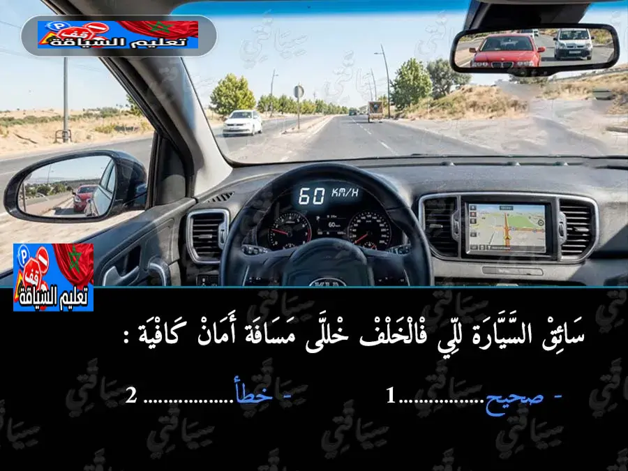
الجواب الصحيح: 2
سائق السيارة اللي فالخلف خاصو يخلي مسافة أمان كافية بينو وبيني، باش إلا وقع شي خطر مفاجئ أو إذا إستعملت الفرامل يقدر يوقف بلا ما يصطدم بيا. فهاد الصورة كيبان لينا من المرآة أن السيارة الحمراء قريبة بزاف من السيارة ديالنا، وحتى لوحة ترقيمها ما بايناش مزيان، وهاد الشي كيدل أنها ما مخلياش المسافة الكافية. فهاد الوضعية، إلا نقصت أنا السرعة أو فرملت فجأة، كاين احتمال كبير السيارة الحمراء تصطدم بيا من الخلف. إذن سائق السيارة اللي فالخلف مخلاش مسافة أمان كافية. الجواب الصحيح هو رقم 2: خطأ.
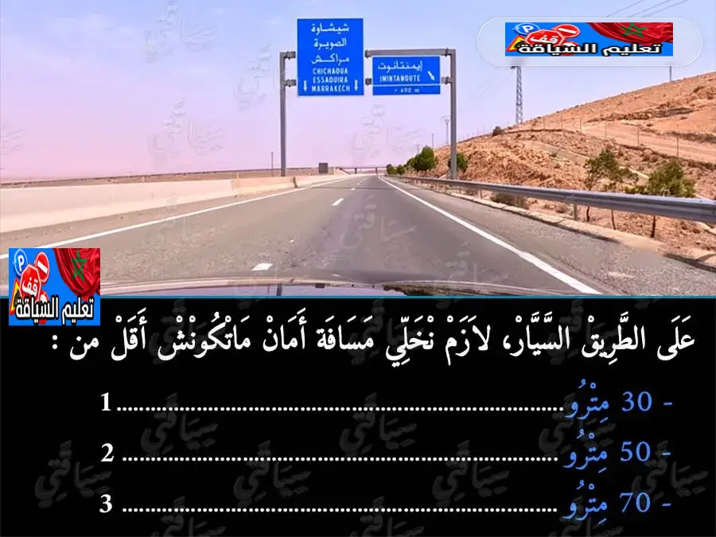
الجواب الصحيح: 3
بناءً على مدونة السير المغربية، ف الطريق السيار خاص السائق يخلي بينو وبين العربة اللي قدامو مسافة أمان ما تكونش أقل من 70 متر. يعني يمكن نخلي أكثر من 70 متر بحال 80 أو 90 أو 100 متر، وهذا أحسن للسلامة، ولكن مايمكنش نخلي أقل من 70 متر بحال 60 أو 50 متر، حيث إلا فرملات العربة اللي قدامي فجأة ما غاديش تكون عندي مسافة كافية باش نتفادى الاصطدام. مسافة الأمان هي الحد الأدنى اللي خاص يبقى بين المركبات باش نقدر نوقف بأمان فحالة نقص مفاجئ فالسرعة أو توقف مفاجئ ديال المركبة اللي قدامي. الجواب الصحيح هو رقم 3: 70 متر.
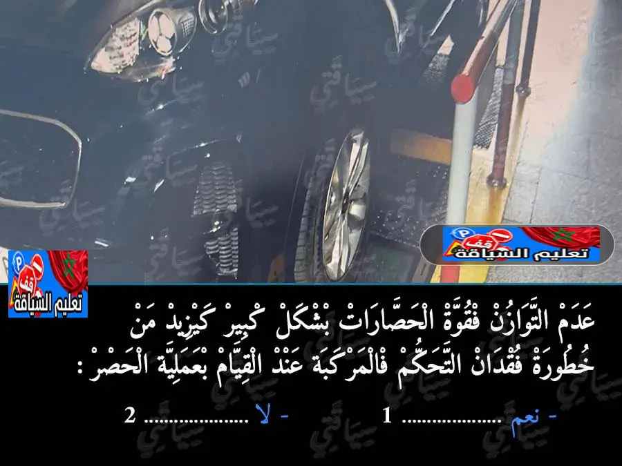
الجواب الصحيح: 1
عملية الحصر كتعني عملية الضغط على الفرامل باش نقصو السرعة أو نوقفو العربة. فاش ماكيكونش توازن فالقوة ديال الفرانات بين العجلات، السيارة ماكتبقاش كتفرمل بشكل مستقيم ومتحكم فيه. مثلا إلا كانت جهة كتفرمل أقوى من جهة أخرى، العربة تقدر تميل ولا تزلق لواحد الجانب، خصوصا فاش كنفرملو بقوة أو فالطريق المبللة أو الزلقة. هاد الخلل كيولي خطير بزاف حيث السائق يمكن يفقد السيطرة على الاتجاه ديال السيارة أثناء الفرملة، وبدل ما توقف العربة بأمان، تقدر تنحرف على المسار ديالها أو تدخل فشي خطر. لذلك عدم التوازن فقوة الحصار كيزيد بشكل كبير من خطورة فقدان التحكم فالمركبة عند القيام بعملية الحصر. الجواب الصحيح هو رقم 1.
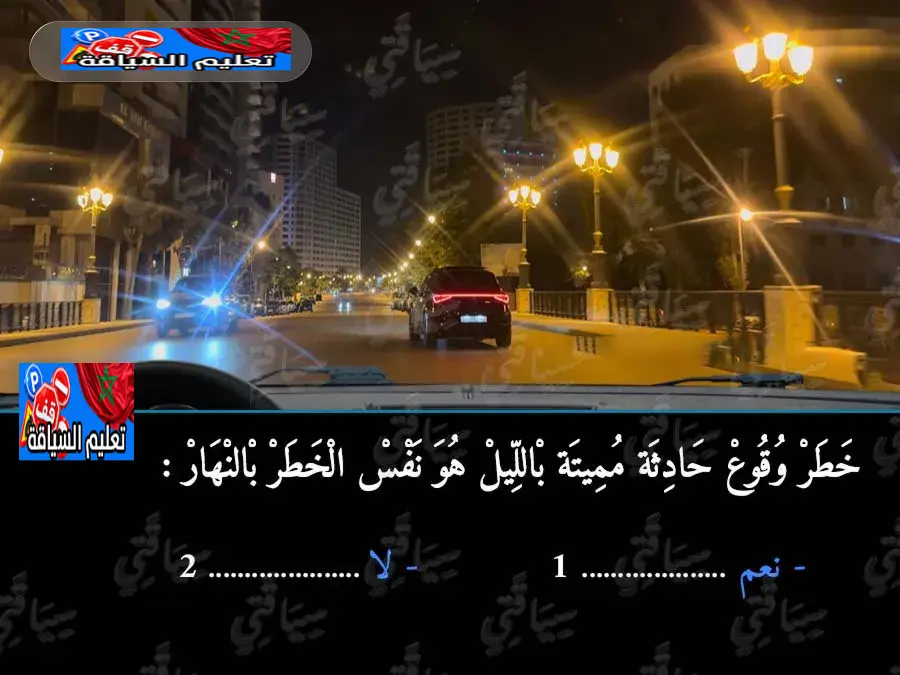
الجواب الصحيح: 2
خطر وقوع حادثة مميتة فالليل ماشي هو نفس الخطر فالنهار، بل كيكون أكبر بكثير، لأن الرؤية كتكون ناقصة والسائق كيقدر مايشوفش الخطر إلا حتى يقرب ليه بزاف. فالليل كذلك كيتزاد تأثير العياء والنعاس، وكيولي تقدير المسافات والسرعة أصعب، خصوصا إلا كانت الطريق غير مضاءة أو كاين استعمال غير مناسب للأضواء من طرف السائقين الآخرين. لذلك الحوادث اللي كتوقع فالليل كتكون غالبا أخطر من ديال النهار، ومايمكنش نعتابرو أن مستوى الخطر بجوج بحال بحال. الجواب الصحيح هو رقم 2.
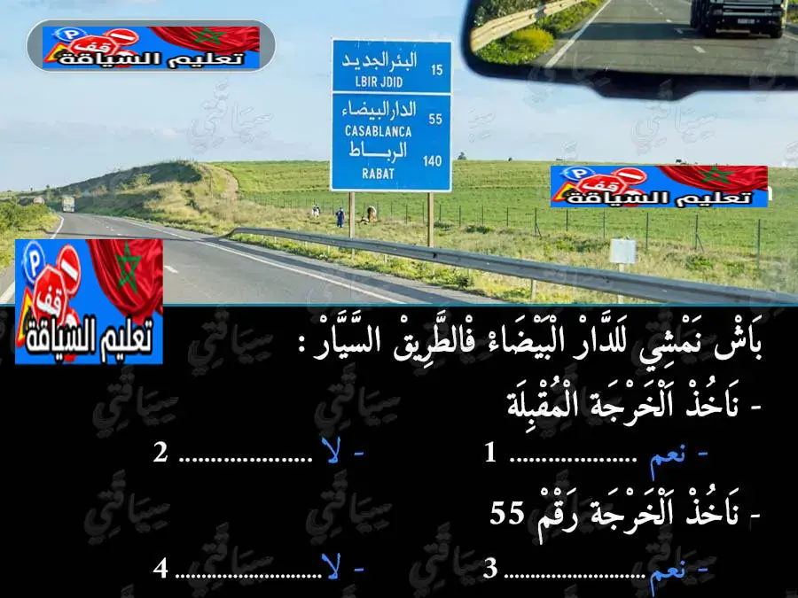
الجواب الصحيح: 2 و 3
باش نمشي للدار البيضاء فالطريق السيار، واش ناخذ الخرجة المقبلة؟ لا، لأن الخرجة المقبلة هي البئر الجديد واللي باقي ليها غير 15 كلم، وأنا الهدف ديالي هو نمشي للدار البيضاء ماشي البئر الجديد. أما بالنسبة لعبارة “ناخذ الخرجة رقم 55” فهنا خاص نفهمو أن الرقم 55 ماكيقصدوش به رقم الخرجة، وإنما كيقصد شنو مكتوب قدام الرقم 55 فاللوحة، واللي هو الدار البيضاء. يعني ناخد الدار البيضاء باقية ليها 55 كلم، وبالتالي نتبع الاتجاه ديالها. الجواب الصحيح هو رقم 2 و 3.
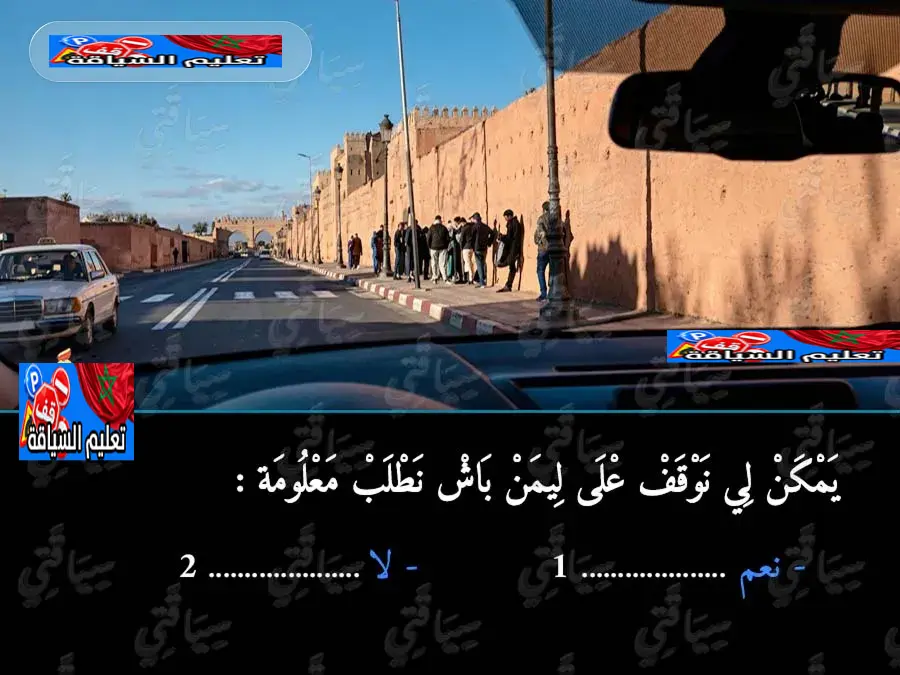
الجواب الصحيح: 2
فالصورة كيبان لينا أن الطريق ضيقة، وكاينين ناس فالطروطوار، وحتى الرصيف مصبوغ بالأبيض والأحمر، وهاد اللون كيدل على أن الوقوف أو التوقف فهاد البلاصة ممنوع. إلا وقفنا على اليمين باش نطلبو معلومة، غادي نسدو جزء من الطريق ونعرقلو حركة السير، خصوصا أن السيارات اللي جاية من ورانا ممكن ما تلقاش المساحة الكافية باش دوز بأمان. طلب المعلومة ماكيبررش أننا نوقفو فبلاصة ممنوعة أو نخلقو خطر على باقي مستعملي الطريق. خاص السائق يكمل السير حتى يلقى مكان مناسب ومسموح فيه الوقوف، بحال موقف أو بلاصة واسعة ماكتعرقلش المرور. الجواب الصحيح هو رقم 2.
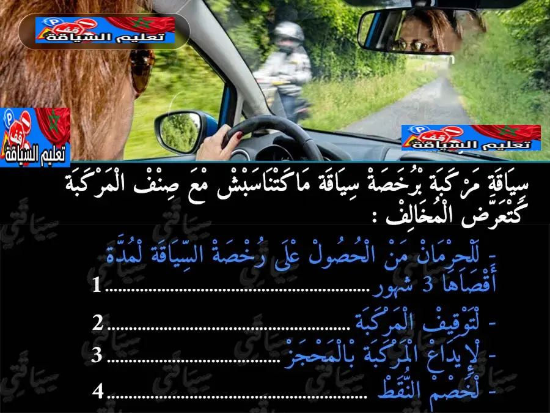
الجواب الصحيح: 3
السياقة برخصة ماكتناسبش مع صنف المركبة كتعتبر مخالفة خطيرة، لأن كل نوع ديال المركبات خاصو رخصة مناسبة ليه حسب الحجم والوزن وطريقة التحكم فيه. مثلا، اللي عندو غير رخصة ديال سيارة خفيفة مايمكنش يسوق حافلة أو شاحنة كبيرة، حيث هاد المركبات كتحتاج تكوين خاص وتجربة أكبر، وكتكون مسؤوليتها أخطر على الطريق بسبب الحجم والمسافة اللي كتحتاج باش توقف والمناورات ديالها. فاش العون المكلف بالمراقبة الطرقية كيلقى أن السائق كيسوق مركبة برخصة ماكتناسبش مع صنفها، فالإجراء اللي كيتخذ هو إيداع المركبة بالمحجز باش ما تبقاش كتسير بطريقة غير قانونية وكتعرض باقي مستعملي الطريق للخطر. الجواب الصحيح هو رقم 3: إيداع المركبة بالمحجز.
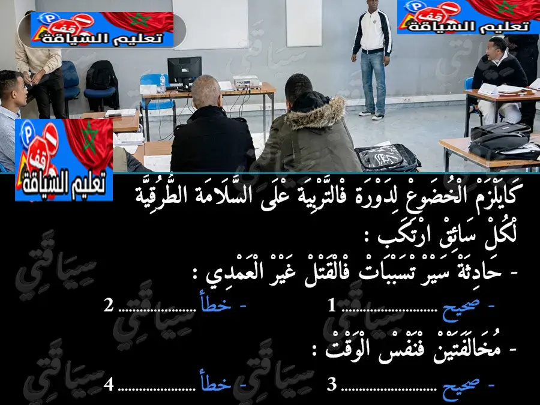
الجواب الصحيح: 1 و 4
الحضور للدورة ديال التربية على السلامة الطرقية كيكون إلزامي فبعض الحالات الخطيرة اللي كتبيّن أن السائق محتاج يرجع يتوعى بقواعد السلامة والمسؤولية فالطريق. مثلا إلا ارتكب السائق حادثة سير تسببات ف القتل غير العمدي، فهاد الحالة خاصو يحضر هاد الدورة لأنها مرتبطة بخطورة الحادثة والنتائج ديالها على حياة الناس. أما غير يرتكب مخالفتين فنفس الوقت مثلا عدم ربط حزام السلامة والتكلم عبر الهاتف، فهذا بوحدو ماكيعنيش بالضرورة أنه ملزم يحضر دورة التربية على السلامة الطرقية، وكاتكون العقبولة ديال المخالفتين فنفس الوقت هو غرامة مالية وسحب بعض نقاط رخصة السياقة على حسب المخالفتين. حيث الإلزام كيكون مرتبط بحالات محددة وخطيرة أكثر، ماشي فقط بجمع مخالفتين عاديين فنفس اللحظة. لذلك الجواب الصحيح هو رقم 1 و 4.
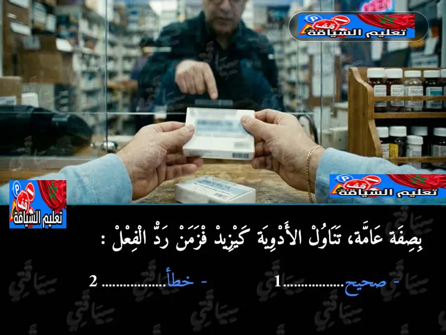
الجواب الصحيح: 1
بصفة عامة، تناول الأدوية يقدر يزيد زمن رد الفعل عند السائق، ولكن خاص نفهمو أن المقصود ماشي أن كل دواء كيفعل هاد الشي، وإنما عدد كبير من الأدوية المتداولة يمكن يأثر على السياقة، حتى إلا ماكانتش مخصصة للنوم. كاين أدوية عادية بحال بعض أدوية الزكام والسعال، الحساسية، الألم، دوار السفر، القلق أو الاكتئاب، كتقدر تسبب النعاس، الدوخة، نقص التركيز وضعف اليقظة. هاد التأثير كيخلي السائق يتأخر فاش يبان ليه خطر مفاجئ، يعني كيحتاج وقت أكثر باش ينتبه ويضغط على الفرامل أو يتصرف، وهاد الشي كيزيد احتمال وقوع حادثة. لذلك قبل السياقة، خاص السائق يقرا النشرة ديال الدواء، ينتبه للرموز أو التحذيرات، ويسول الطبيب أو الصيدلي إلا كان عندو شك. إذن بزاف ديال الأدوية يمكن تزيد زمن رد الفعل وتضعف القدرة على السياقة. الجواب الصحيح هو رقم 1.
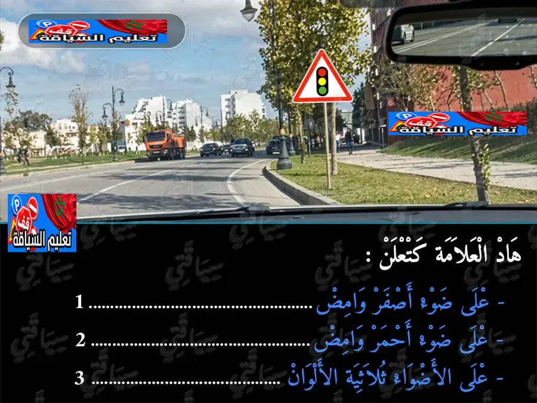
الجواب الصحيح: 3
هاد العلامة المثلثة كتدخل فعلامات الخطر، وكتنبهني أنني غادي نقرب من ملتقى طرق أو مقطع فيه أضواء ثلاثية الألوان، يعني: أحمر، أصفر، وأخضر. الهدف منها هو باش السائق ينقص من السرعة ويبقى واجد يتوقف إلا لقى الضوء أحمر، أو يتعامل بحذر إلا تبدل الضوء. هاد العلامة ماكاتعنيش أن كاين ضوء أصفر وامض ولا ضوء أحمر وامض، حيث هادو كيكونو حالات خاصة فالضو نفسو، أما العلامة اللي فالصورة كاتعطي غير تنبيه مسبق بوجود إشارات ضوئية ثلاثية الألوان فالأمام. الجواب الصحيح هو رقم 3.
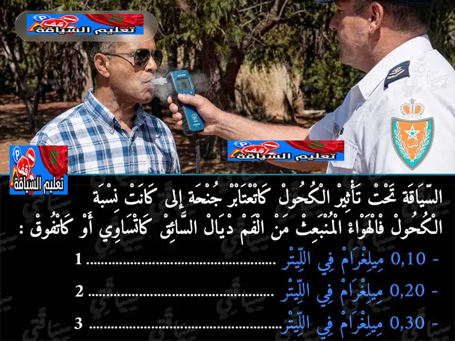
الجواب الصحيح: 1
السياقة تحت تأثير الكحول كتعتبر جنحة إلا كانت نسبة الكحول فالهواء الخارج من فم السائق كتساوي أو كتفوت 0,10 ميليغرام فاللتر. يعني ملي كيدير السائق الاختبار بالنفخ وكتبان هاد النسبة أو أكثر، كيتعتبر فحالة سياقة تحت تأثير الكحول، وماخاصوش يكون كيسوق. وكاينة حتى النسبة فالدم اللي هي 0,20 غرام فاللتر أو أكثر. هاد المخالفة خطيرة حيث الكحول كينقص التركيز، كيضعف الانتباه، وكيبطّأ رد الفعل، وهاد الشي كيقدر يسبب حوادث خطيرة. العقوبة ديال السياقة تحت تأثير الكحول أو تحت تأثير مواد مخدرة كتكون فيها سحب 6 نقاط من رصيد رخصة السياقة، وغرامة مالية من 5000 حتى 10000 درهم، وعقوبة حبسية من 6 أشهر حتى سنة واحدة، ويمكن كذلك يترتب عليها توقيف أو سحب رخصة السياقة. الجواب الصحيح هو رقم 1: 0,10 ميليغرام في اللتر.
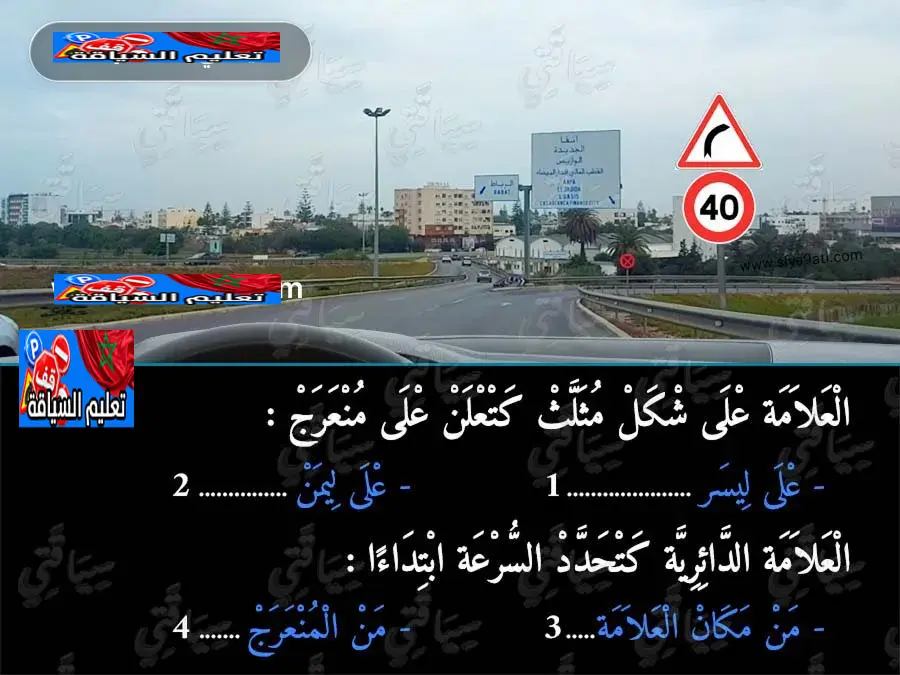
الجواب الصحيح: 2 و 3
فالصورة كاين جوج علامات خاصنا نفرقو بينهم. العلامة الأولى على شكل مثلث هي علامة خطر، وكتعلن على وجود منعرج على اليمين قدامنا. وبما أننا داخل التجمع السكني، فخطر المنعرج على اليمين يكون على بعد حوالي 50 متر. أما العلامة الدائرية اللي فيها الرقم 40 فهي علامة منع وتحديد السرعة، وهاد النوع ديال العلامات كيتطبق من مكان العلامة مباشرة، ماشي بحال علامات الخطر اللي كتكون متقدمة على الخطر. يعني منين نوصلو للعلامة خاصنا ما نفوتوش 40 كلم فالساعة. الخلاصة: العلامة المثلثة كتشير لخطر منعرج على اليمين بعد 50 متر، والعلامة الدائرية كتحدد السرعة في 40 كلم فالساعة ابتداء من مكان العلامة. الجواب الصحيح هو رقم 2 و 3.
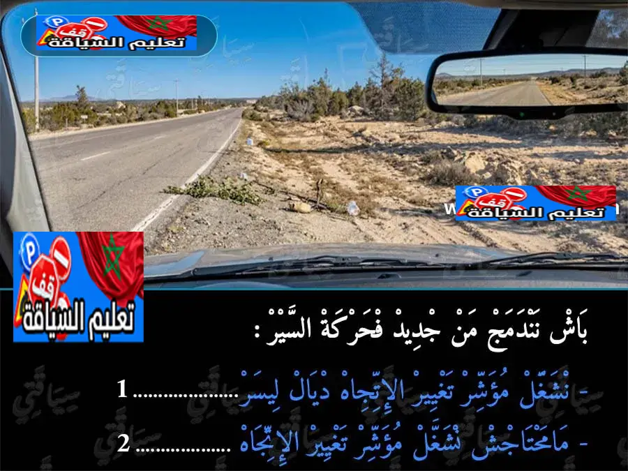
الجواب الصحيح: 1
السيارة ديالنا واقفة فالقارعة وبغينا نندمجو من جديد فحركة السير. حتى إلا ماكان حتى شي واحد جاي لا من الخلف لا من الاتجاه المعاكس، خاصنا ضروري نشعلو مؤشر تغيير الاتجاه قبل ما نتحركو، حيث المؤشر كيعلم باقي مستعملي الطريق بالنية ديالنا وكيخلي المناورة واضحة وآمنة. نفس القاعدة كتطبق حتى فاش كنكونو أصلا فحركة السير وبغينا ندورو على اليمين أو على اليسار، ضروري نشعلو مؤشر تغيير الاتجاه واخا مايبان حتى شي واحد فالطريق، لأن الإشارة ماشي اختيارية وماكتستعملش غير ملي كاينين السيارات، بل كتستعمل فكل تغيير اتجاه أو اندماج أو خروج من التوقف. من بعد تشغيل المؤشر كنراقبو الطريق وكنتحركو غير إلا كان الاندماج آمن. الجواب الصحيح هو رقم 1: نشعل مؤشر تغيير الاتجاه ديال ليسر.
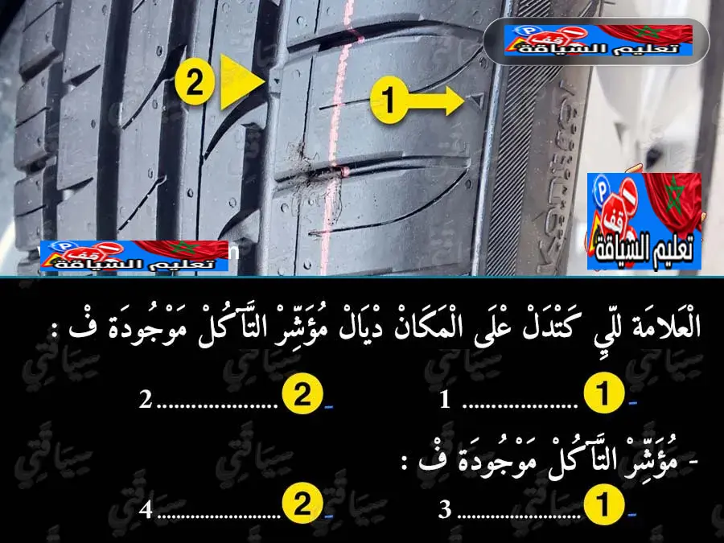
الجواب الصحيح: 1 و 4
فهاد الصورة خاصنا نفرقو بين جوج حوايج: العلامة اللي كتدل على مكان مؤشر التآكل و مؤشر التآكل نفسو. العلامة رقم 1 هي المثلث الصغير اللي كاين فجانب العجلة، وهاد المثلث ماشي هو مؤشر التآكل، ولكن غير كيعطينا فين نلقاو مؤشر التآكل داخل أخاديد العجلة. أما مؤشر التآكل الحقيقي فهو رقم 2، كاين وسط النقوش ديال العجلة، وكيكون بحال بروز صغير فالقاع ديال الأخدود. إلا وصل سطح العجلة لنفس المستوى ديال هاد المؤشر، فهذا كيعني أن العجلة تآكلات وولات خاصها تتبدل، حيث نقص العمق ديال النقوش كيأثر على التشبث بالطريق خصوصا مع الماء والفرملة. إذن العلامة اللي كتدل على مكان المؤشر هي رقم 1، ومؤشر التآكل موجود فالمكان رقم 2. الجواب الصحيح هو رقم 1 و 4.
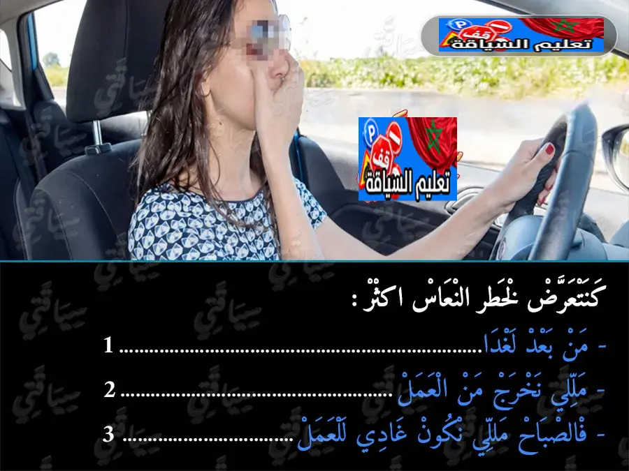
الجواب الصحيح: 1
خطر النعاس فالسياقة كيتزاد خصوصا من بعد الغداء، حيث الجسم كيدخل فمرحلة ديال الهضم، والتركيز كيقدر ينقص شوية، وكيجي الإحساس بالنعاس أو الثقل. هاد الوقت كيكون خطير على السائق، لأن النعاس كيضعف الانتباه وكيبطّأ رد الفعل، يعني إلا وقع شي خطر مفاجئ فالطريق السائق يقدر يتأخر فالتصرف. أما ملي كنخرج من العمل أو فالصباح ملي كنمشي للعمل، فهاد الحالات ممكن يكون فيها العياء حسب الشخص، ولكن الجواب اللي كيركز عليه السؤال هو الوقت المعروف اللي كيزيد فيه خطر النعاس عند بزاف ديال الناس، وهو من بعد الغداء. الجواب الصحيح هو رقم 1: من بعد الغداء.
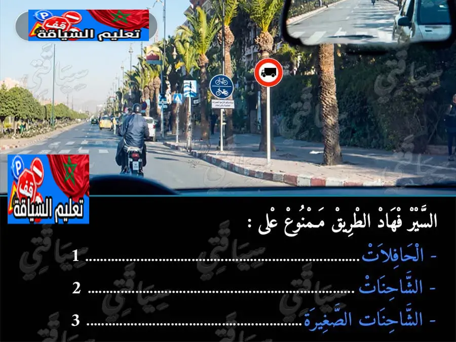
الجواب الصحيح: 2 و 3
في الصورة كاين علامة دائرية بإطار أحمر وفيها رمز ديال شاحنة، وهاد النوع ديال العلامات هو ديال المنع. هاد العلامة كتعني أن السير فهاد الطريق ممنوع على الشاحنات، وكيشمل كذلك الشاحنات الصغيرة اللي كيدخلو فنفس صنف عربات نقل البضائع حسب التشوير. إذن ملي كنشوفو هاد العلامة خاصنا نفهمو أن الطريق ممنوع على عربات نقل البضائع، سواء كانت شاحنة كبيرة أو صغيرة. الجواب الصحيح هو رقم 2 و 3.
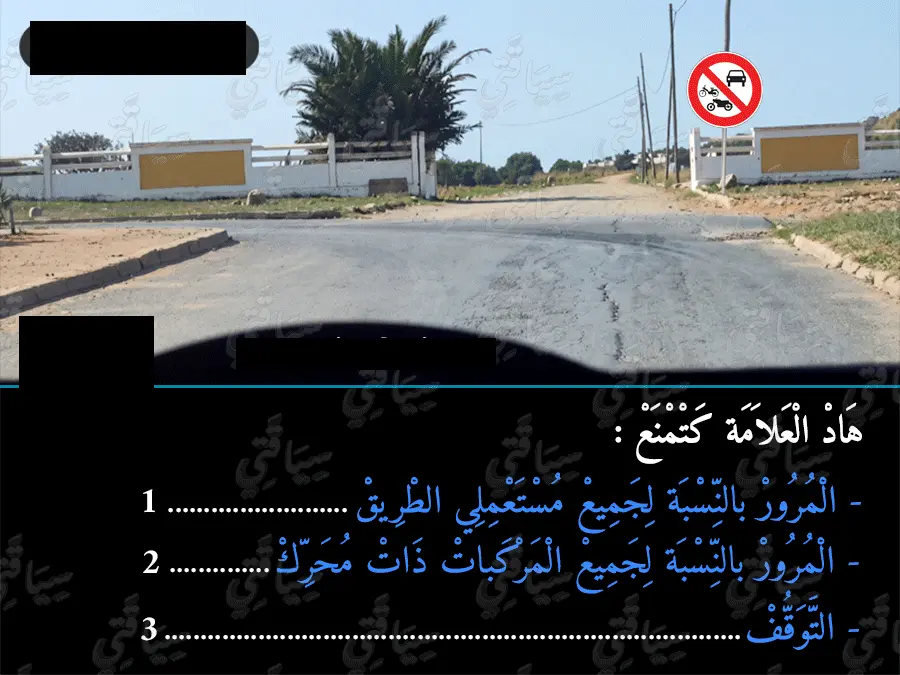
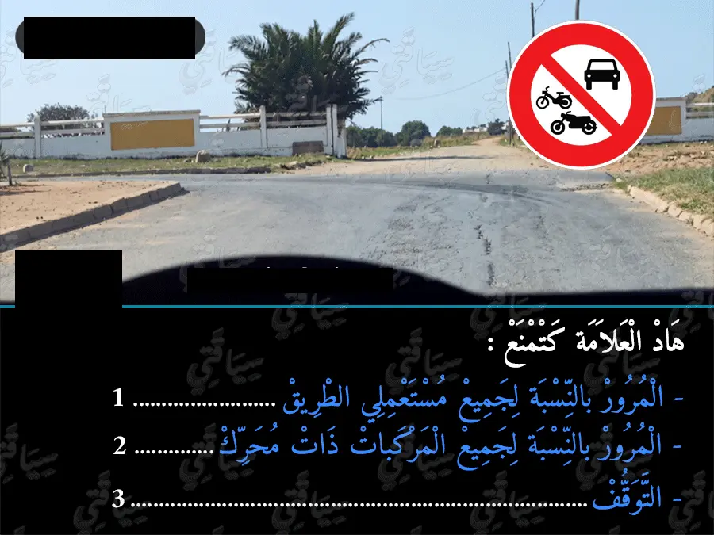
الجواب الصحيح: 2
هاد العلامة دائرية بإطار أحمر وشرطة حمراء، وداخلها رموز ديال سيارة ودراجة نارية، كتعني أن المرور ممنوع على جميع المركبات ذات محرك. يعني السيارات، الدراجات النارية، الشاحنات الصغيرة، وباقي العربات اللي كتخدم بمحرك ماعندهاش الحق تدخل من هاد الطريق. ولكن ماكاتعنيش أن المرور ممنوع على جميع مستعملي الطريق، حيث الراجلين او ساقي الدراجات الهوائية مثلا ماشي داخلين فهاد المنع، وماكاتعنيش حتى التوقف، لأن علامة التوقف عندها شكل آخر. إذن هاد العلامة كتمنع غير المركبات ذات محرك من المرور فهاد الطريق. الجواب الصحيح هو رقم 2: المرور بالنسبة لجميع المركبات ذات محرك.
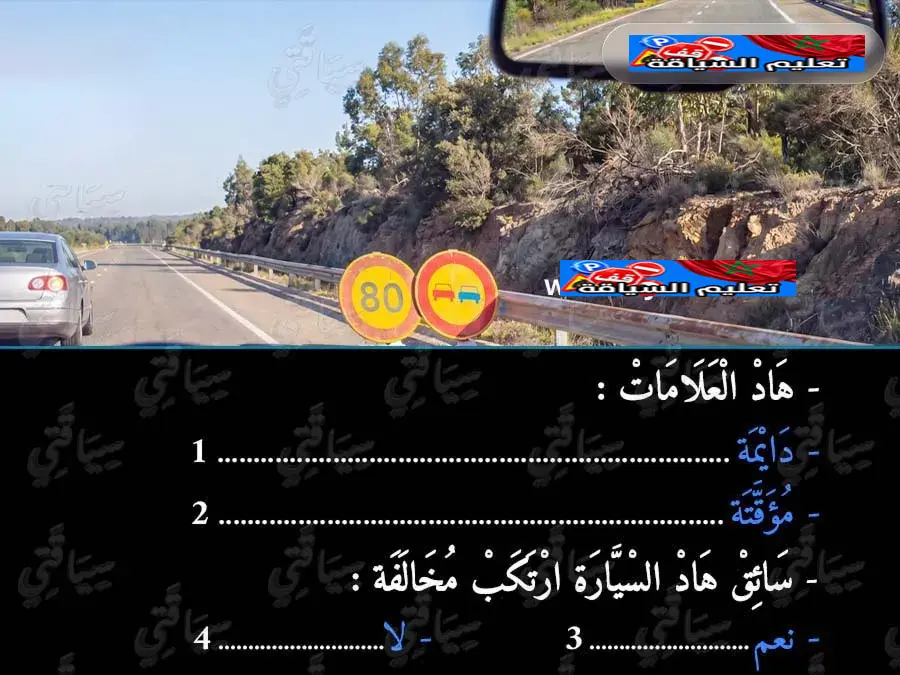
الجواب الصحيح: 2 و 3
هاد العلامات اللي باينين فالصور مؤقتة حيث لونها أصفر، وماشي علامات دائمة، وكتستعمل غالبا فحالات الأشغال أو الخطر المؤقت باش تنظم السير. العلامة الأولى كتحدد السرعة ف 80 كلم فالساعة، والعلامة الثانية كتمنع التجاوز، يعني السائق ماخاصوش يبدأ عملية التجاوز فهاد المقطع. ولكن السيارة اللي قدامنا شعلات مؤشر تغيير الاتجاه لليمين، وهذا كيعني أنها كانت كتجاوزنا وباغية ترجع للمسلك العادي للسير. ارتكبات مخالفة حيث دخلات فعملية التجاوز فمكان فيه علامة منع التجاوز مؤقتة. إذن العلامات مؤقتة لأنها باللون الأصفر، وسائق هاد السيارة ارتكب مخالفة بسبب التجاوز الممنوع. الجواب الصحيح هو رقم 2 و 3.
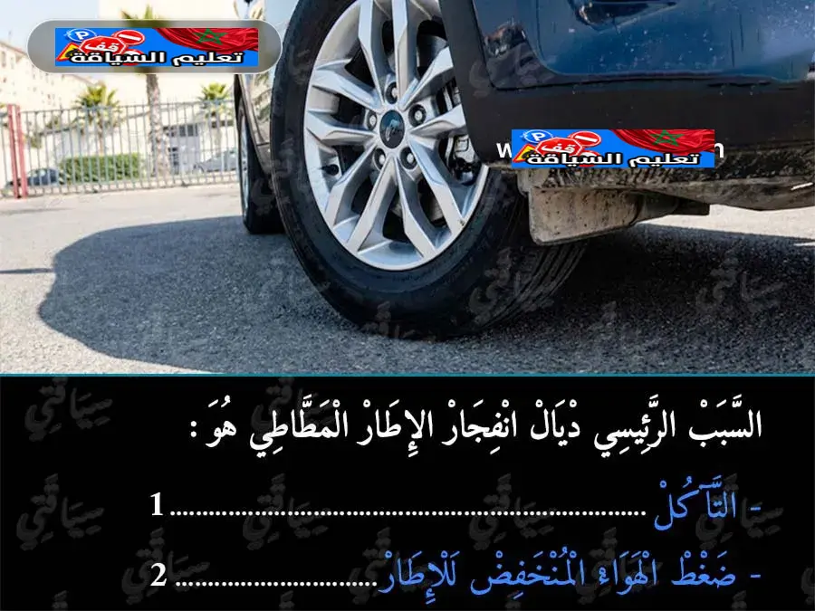
الجواب الصحيح: 2
السبب الرئيسي ديال انفجار الإطار المطاطي غالبا كيكون هو ضغط الهواء المنخفض فالإطار، حيث ملي كيكون الإطار ناقص فالضغط، كيتسطح أكثر وكيولي كيحتك بالطريق بزاف، وهاد الاحتكاك كيرفع الحرارة ديالو. مع السرعة أو المسافة الطويلة، الحرارة كتقدر تضعف بنية الإطار وتخليه يتمزق أو ينفجر فجأة. أما التآكل فهو خطر وكيقدر يسبب فقدان التشبث أو يزيد احتمال الانفجار، ولكن السبب الأساسي اللي كيركز عليه هاد السؤال هو نقص ضغط الهواء. لذلك خاص السائق يراقب ضغط العجلات بانتظام، خصوصا قبل السفر، ويحافظ عليه حسب توصيات الصانع. الجواب الصحيح هو رقم 2: ضغط الهواء المنخفض للإطار.
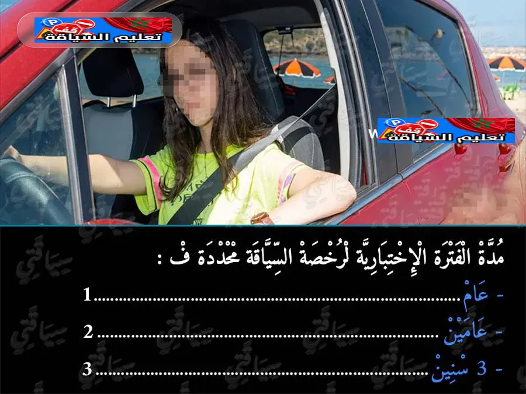
الجواب الصحيح: 2
مدة الفترة الاختبارية لرخصة السياقة المغربية كتكون عامين، يعني منين السائق كياخذ الرخصة لأول مرة كيبقى فمرحلة تجريبية لمدة سنتين. فهاد المرحلة الرخصة كتكون فيها 20 نقطة فقط، وهاد الشي كيعني أن السائق الجديد خاصو يكون حذر بزاف ويتجنب المخالفات اللي كتسحب النقط. منين كتسالي الفترة الاختبارية، إلا كان رصيد الرخصة ما نقصش على 7 نقاط، كتتحول الرخصة من جديد لرخصة نهائية وكيخصص ليها رصيد ديال 30 نقطة. الهدف من هاد النظام هو أن السائق الجديد يتعلم السياقة بمسؤولية ويحافظ على السلامة ديالو وسلامة باقي مستعملي الطريق. الجواب الصحيح هو رقم 2: عامين.
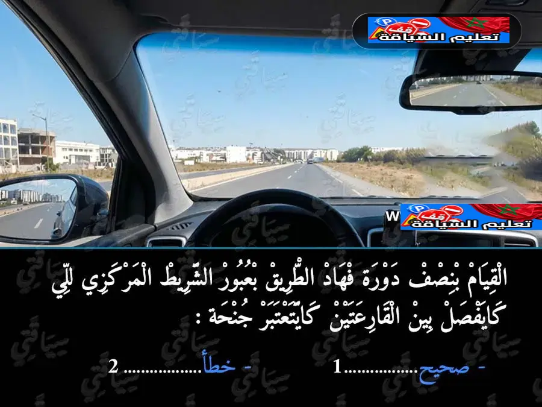
الجواب الصحيح: 1
القيام بنصف دورة فهاد الطريق بعبور الشريط المركزي اللي كايفصل بين القارعتين كيتعتبر جنحة، وماشي مجرد مخالفة بسيطة، حيث هاد التصرف خطير بزاف. الشريط المركزي فبحال هاد الطرق معمول باش يفصل اتجاهات السير ويمنع العربات من العبور للجهة المقابلة، لأن السرعة كتكون كبيرة وأي مناورة بحال نصف دورة أو الرجوع إلى الخلف تقدر تسبب اصطدام خطير. نفس الخطورة كاينة كذلك فحالة الرجوع إلى الخلف فطريق سيار أو طريق سريع. فهاد الحالة السائق كيتعرض لعقوبات منها خصم 3 نقاط من رصيد رخصة السياقة، وغرامة مالية كتتراوح بين 4000 و 8000 درهم، ويمكن حتى توقيف رخصة السياقة لمدة من شهر واحد حتى 3 أشهر فحالة التلبس. إذن الجواب الصحيح هو رقم 1.
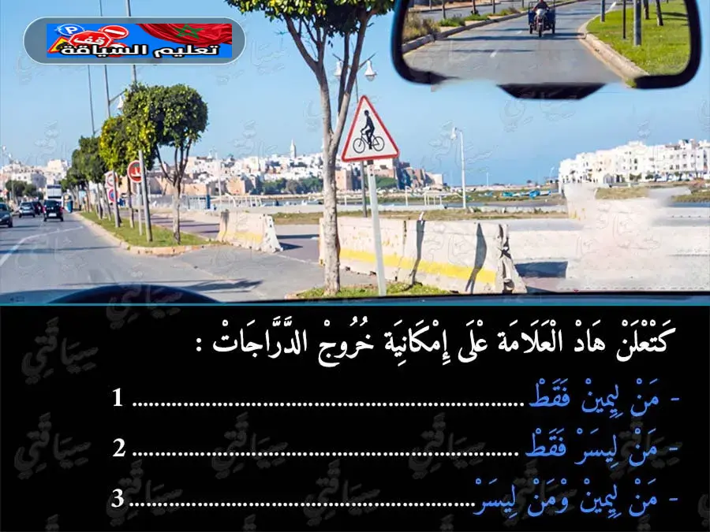
الجواب الصحيح: 3
هاد العلامة المثلثة هي علامة خطر، وكتنبهني إلى إمكانية خروج أو مرور الدراجات الهوائية فهاد المنطقة. كتنبهني بصفة عامة أن الخطر ممكن يجي من أي جهة، حسب الطريق والمسالك الجانبية والممرات القريبة. لذلك خاصني ننقص السرعة، نزيد الانتباه، ونكون مستعد نفرمل إلا بان شي سائق دراجة كيدخل للطريق. بما أن الجوابين “من اليمين فقط” و “من اليسار فقط” كيحددو الخطر فجهة وحدة فقط، فهم غير دقيقين. الجواب الصحيح هو رقم 3: من اليمين ومن اليسار.